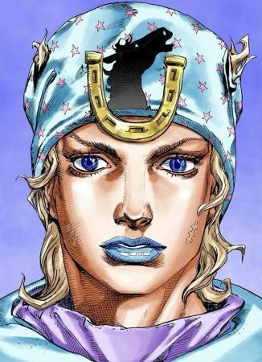

Jonathan Joestar, surnommé Johnny, est le protagoniste de la partie 7 de Jojo's Bizarre Adventure, "Steel Ball Run". Né en 1872 dans l'État du Kentucky aux États-Unis, il est issu d'une famille d'aristocrates ayant une certaine richesse. Johnny, comme son père, est un jockey qui monte des chevaux depuis ses cinq ans.

Ancien jockey prodige devenu paraplégique, Johnny rejoint la course Steel Ball Run afin de comprendre le secret des Boules de Fer de Jayro Zeppeli, celles-ci étant l'unique moyen de soigner ses jambes. Au cours de la compétition, il se retrouve impliqué dans la protection du Corps Saint, une relique convoitée et recherchée par le président Funny Valentine.